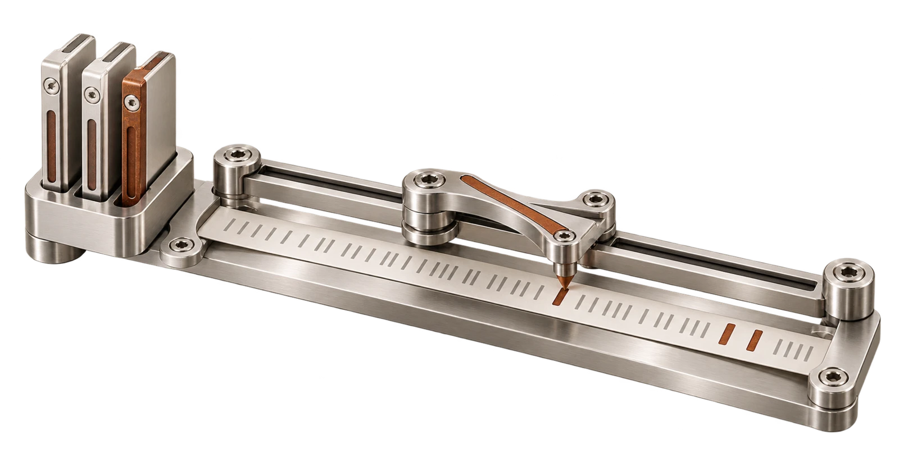

Ferroni 2.8, a regular-expression engine for Rust
Your Oniguruma patterns. Now in pure Rust, with the scanner editors rely on.
Oniguruma reads the patterns behind TextMate grammars, PHP’s mbstring and jq. Its C project closed in April 2025. Ferroni continues it in Rust, ported function by function: lookbehind, backreferences and Unicode matching included, and no C compiler in your build.
- 2,974 of 2,974upstream UTF-8 tests of Oniguruma
- 12 of 12Oniguruma syntax modes
- 10 of 10selected features, the only Rust engine
- Rust 1.94+BSD-2-Clause, native and WebAssembly
A pattern describes the text you want.
A regular expression is a small language for finding text.
\d{4} means four digits. (?<year>…) gives the part it
found a name. Search boxes, form checks, log filters and code editors all speak it. Most
patterns are simple. Some need to look behind a label, refer back to a word they already
found, or recognize the letters of one script.
Oniguruma is the engine many of those patterns were written for. It reads the TextMate grammars that VS Code, Shiki and many other tools use to color code. It powers PHP’s mbstring and the jq command-line tool. When its C project closed, those patterns lost their maintained home.
Ferroni gives them a new one in Rust: the same syntax and the same matches, behind an API that feels familiar to Rust developers. Cargo builds it, for native targets and for WebAssembly.
Give your patterns room to work.
Look behind a label, repeat a word you found, select a script, fold ß into ss. Ten features, each checked by a test that runs.
Not every engine reads every pattern. Rust’s own
regex crate leaves out lookbehind and backreferences on purpose, so it can
promise to finish in linear time. That is the right choice for patterns that strangers
type. For grammars and code written for Oniguruma, a missing feature changes what a
pattern means, or rejects it outright.
Ferroni passes every check in the comparison below, the only Rust engine that does. Each match in the table is Ferroni’s real output for that pattern and text.
Every Yes and No is an executable check in tests/regex_feature_matrix.rs.
Ruby’s Onigmo is part of the
full syntax comparison.
Compile once. Put it to work.
Reusing a compiled pattern, Ferroni matches faster than C Oniguruma, fancy-regex and Rust’s regex crate. PCRE2 with its JIT compiler is faster still, and C compiles patterns faster.
A highlighter compiles its grammar’s patterns once, then runs them over every line of every file it opens. A log filter compiles a pattern once and applies it to millions of lines. That reuse is the work Ferroni is built for. It interprets compiled patterns and generates no machine code while your program runs.
Creating a pattern for one single search is a different job. There, compilation counts, and C Oniguruma is quicker. Switch the chart to see both sides.
Time for the same work
Ferroni = 1×, the line through every row. A bar past it took longer; a bar short of it was faster.
Each row compares only the tasks both engines can run. Every task, platform and timing
Show the figures as a table
Your next highlighter starts here.
Give the scanner a set of patterns and ask which one matches next. You handle the grammar; Ferroni handles the regex work.
Syntax highlighting repeats one small race thousands of times per file. At each position, every pattern the grammar allows right now is tried, and the earliest match wins. The next search starts where that match ended. Ferroni’s Scanner follows the model of vscode-oniguruma, the engine inside VS Code’s highlighting.
The positions come back the way an editor counts them. On a plain ASCII line, bytes and UTF-16 units agree. Add one ß and they part ways; switch to the second line to see it.
One line, three searches for the next match
| From byte | Winning pattern | Match | Bytes | UTF-16 |
|---|
The same scanner in Rust
Scanner::new, find_next_match
Underneath Ferriki
Shiki-compatible highlighting
Ferriki, a sibling engine, runs TextMate grammars on this scanner and returns highlighted HTML. You can build your own tokenizer the same way; no other Ferramenta engine is required.
Prepare once. Load across starts.
A highlighter loads the same grammars every time it starts,
and preparing their patterns costs time on every start. With the optional
precompiled-eager feature, that preparation moves into your build. Export
it once, ship it with your application, and load only the parts a document needs.
Patterns that depend on captured text still resolve locally, and anything missing falls
back to normal preparation.
- At build time
- Prepare the static scanner sets and export compiled programs with their group instructions.
- In your release
- Commit, embed or serve the paired archives. Native and WebAssembly builds read the same files.
- On each start
- Decode the programs and groups you request. Search caches stay local to the process.
Ported function by function.
Bindings would keep the C code. A new engine would change what grammars match. Ferroni ports the original instead.
Every C source file of Oniguruma has one Rust module, with the same function names and control flow. When a test fails, the corresponding C function is one search away. A fix upstream can be compared line by line. The idiomatic Rust API, the scanner and the guardrails sit beside the port and do not change how a pattern matches.
- regparse.c
- regparse.rs
- Pattern parser
- regcomp.c
- regcomp.rs
- Tree to bytecode compiler
- regexec.c
- regexec.rs
- Matching machine
- regsyntax.c
- regsyntax.rs
- The twelve syntax modes
- regset.c
- regset.rs
- Multi-pattern search
- unicode.c
- unicode/
- Unicode tables, segmentation
- new in Rust
- scanner.rs
- Scanner for highlighters
- new in Rust
- api.rs
- Idiomatic Rust API
Eight of thirteen modules shown. The complete mapping
Then the original’s own tests decide. Every test in Oniguruma’s suite that targets UTF-8 is ported case by case, with the same patterns, texts and expected positions, and vscode-oniguruma’s scanner tests join them. Where Ferroni differs on purpose, the difference is written down: newer Unicode tables, and a backtracking stack that stops at a limit instead of running out of memory.
- test_utf8.c1,554 / 1,554
- test_back.c1,225 / 1,225
- test_syntax.c144 / 144
- test_options.c and test_regset.c51 / 51
- vscode-oniguruma scanner tests15 / 15
Powerful patterns. Practical guardrails.
Backtracking makes expressive patterns possible. Limits keep that work in hand when the text comes from outside.
A backtracking engine tries one way to match, and when it
fails, it goes back and tries another. That is what makes lookbehind and backreferences
possible. With an unlucky pattern and hostile text, the number of ways explodes. Ferroni
flags such patterns when they compile, can refuse them outright, and stops any search at
a time or retry limit you set. Only Rust’s regex crate guarantees linear
time; choose it when you need that guarantee.
Buffer and string processing use safe Rust. The remaining unsafe code links parse-tree nodes under a documented policy. Four fuzzers exercise compilation, matching and the scanner on every pull request.
A risky pattern, flagged
Refused when users supply it
reject_backtracking_risks(true)
A hostile text, stopped
SearchOptions::new().timeout(50 ms)
Real output of ferroni 2.8.0. In browser WebAssembly there is no clock: use a retry limit there. Untrusted input
A clear scope. A deliberate fit.
Choose Ferroni when Oniguruma’s syntax matters to you. Keep your application’s encodings, runtime and safety needs in view: the port covers two of Oniguruma’s 29 encodings, and it leaves out the POSIX and GNU interfaces.
- Editors and tokenizers
- Multi-pattern scanning with byte or UTF-16 positions. Your runtime reads the grammar.
- Rust applications
- Keep your Oniguruma patterns without a C toolchain or bindgen.
- Native and WebAssembly
- Cargo builds both. There is no npm package.
- ASCII and UTF-8
- Shift_JIS, EUC-JP and the other legacy encodings stay with C. Ruby runs Onigmo.
Ferroni continues K. Kosako’s Oniguruma, ported from its C source, and follows the Scanner API and tests of Microsoft’s vscode-oniguruma. It is an independent continuation, not affiliated with or endorsed by Oniguruma’s original author, and keeps its BSD-2-Clause license. It is one of the Ferramenta engines, made by Sebastian Software in Mainz, Germany.
Put your patterns to work.
Start with a working match, or go straight to the scanner for tokenizers and highlighters.
crates.io API reference GitHub repository Integration and support